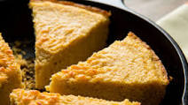
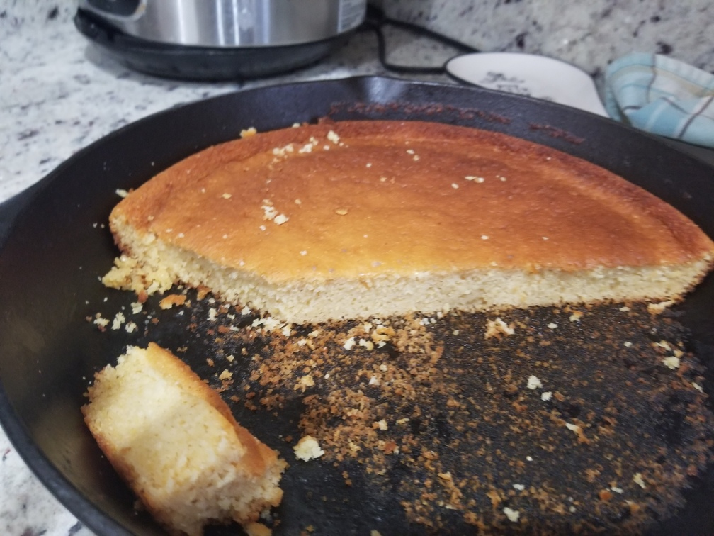

Brown Butter Cornbread
Originally from: NYTimes

Ingredients
- 12 Tbl unsalted butter (1 1/2 sticks)
- 165 g honey (1/2 cup)
- 2 1/4 cup buttermilk
- 3 large eggs
- 180 g cornmeal
- 125 g all-purpose flour
- 1 1/2 Tbl baking powder
- 1/2 tsp baking soda
- 1 1/2 tsp salt
Directions
- Brown butter in cast iron skillet over medium heat. Pour into large bowl (do not wipe out pan).
- Combine all dry ingredients separate from butter.
- Whisk honey and buttermilk into browned butter. Stir in eggs (make sure cool enough before adding eggs)
- Stir in dry ingredients.
- Pour into still hot skillet - bake in 375° oven until top is golden brown (about 30 - 40 minutes)
Notes
-
2021-01-01 - Made as described above to good results, used medium coarse white cornmeal. Original recipe calls for yellow corn meal, uses maple syrup instead of honey, and splits flour into half all-purpose, half whole wheat.
